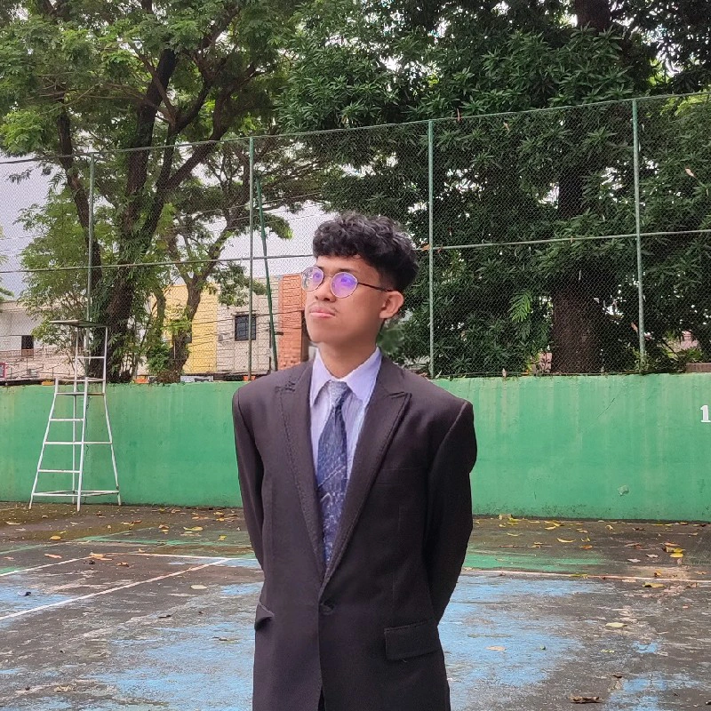

Dokumentasi Praktik Pembelajaran
Momen-momen pembelajaran selama PPL Terbimbing
Video Praktik Mengajar
Dokumentasi lengkap praktik mengajar 3 siklus di [Nama Sekolah]

Mahasiswa Pendidikan Profesi Guru
Asal & Keunikan: Saya berasal dari Kabupaten Gowa, sebuah daerah bersejarah di Sulawesi Selatan yang dikenal sebagai bekas pusat Kerajaan Gowa dan kaya akan budaya Makassar. Di tanah ini, nilai-nilai pangadereng (adat istiadat) masih hidup dalam kehidupan masyarakat, terutama dalam menjunjung siri' (harga diri), pacce (solidaritas), serta semangat kebersamaan. Dari lingkungan yang menghargai kehormatan, tanggung jawab, dan hubungan sosial itulah saya belajar bahwa pendidikan bukan sekadar proses transfer ilmu, melainkan juga pembentukan karakter, cara berpikir, dan sikap hidup.
Inspirasi Mengajar: Saat saya SD, saya memiliki guru yang tegas namun sabar dalam mengajar. Meskipun berstatus guru honorer dan usianya sudah tidak muda, beliau tetap memiliki semangat tinggi dalam mendidik. Sosok beliau menjadi inspirasi bagi saya dalam memahami bahwa mengajar membutuhkan ketulusan, kesabaran, dan dedikasi.
Tujuan Profesional: Menjadi guru SD yang menerapkan pembelajaran joyful, mindful, dan meaningful agar proses belajar di kelas tidak monoton, melainkan mampu membangun keterlibatan, kesadaran, dan pemahaman mendalam pada siswa.
Dokumentasi praktik pembelajaran selama PPL Terbimbing
[Deskripsi singkat pembelajaran: tema, mata pelajaran, dan pendekatan yang digunakan]
[Deskripsi singkat pembelajaran: perbaikan dari siklus 1, media yang digunakan]
[Deskripsi singkat: implementasi final, hasil optimal, inovasi yang diterapkan]
Momen-momen pembelajaran selama PPL Terbimbing
Dokumentasi lengkap praktik mengajar 3 siklus di [Nama Sekolah]
Evaluasi komprehensif praktik mengajar selama PPL Terbimbing
| Aspek Penilaian | Skor Siklus 1 | Skor Siklus 2 | Skor Siklus 3 |
|---|---|---|---|
| Kelengkapan Komponen RPP | [Nilai] | [Nilai] | [Nilai] |
| Kesesuaian Tujuan dengan KD | [Nilai] | [Nilai] | [Nilai] |
| Pemilihan Metode & Media | [Nilai] | [Nilai] | [Nilai] |
| Perencanaan Penilaian | [Nilai] | [Nilai] | [Nilai] |
| Keterlaksanaan RPP | [Nilai] | [Nilai] | [Nilai] |
| TOTAL SKOR | [Total] | [Total] | [Total] |
[Salin catatan/saran dari guru pamong terkait perangkat pembelajaran]
Visi dan misi menjadi guru profesional
"Menciptakan pembelajaran yang aktif, menyenangkan, dan bermakna agar siswa terlibat dalam proses belajar."
Menguasai cara mengubah konten ilmiah menjadi pembelajaran yang bermakna dan sesuai perkembangan siswa SD
Target: 90% | Saat ini: 75%Menciptakan lingkungan belajar yang aman, inklusif, dan kondusif untuk eksplorasi kreatif
Target: 85% | Saat ini: 70%Mengintegrasikan teknologi secara bermakna untuk memperkaya pengalaman belajar, bukan sekadar gimmick
Target: 80% | Saat ini: 65%Memahami dan menghargai latar belakang budaya siswa, terutama nilai-nilai pangadereng Bugis-Makassar
Target: 95% | Saat ini: 80%Terbiasa mengevaluasi praktik mengajar secara kritis dan berkelanjutan untuk perbaikan berikutnya
Target: 95% | Saat ini: 85%Membangun kerjasama dengan orang tua, kolega, dan komunitas untuk mendukung pembelajaran holistik
Target: 90% | Saat ini: 70%